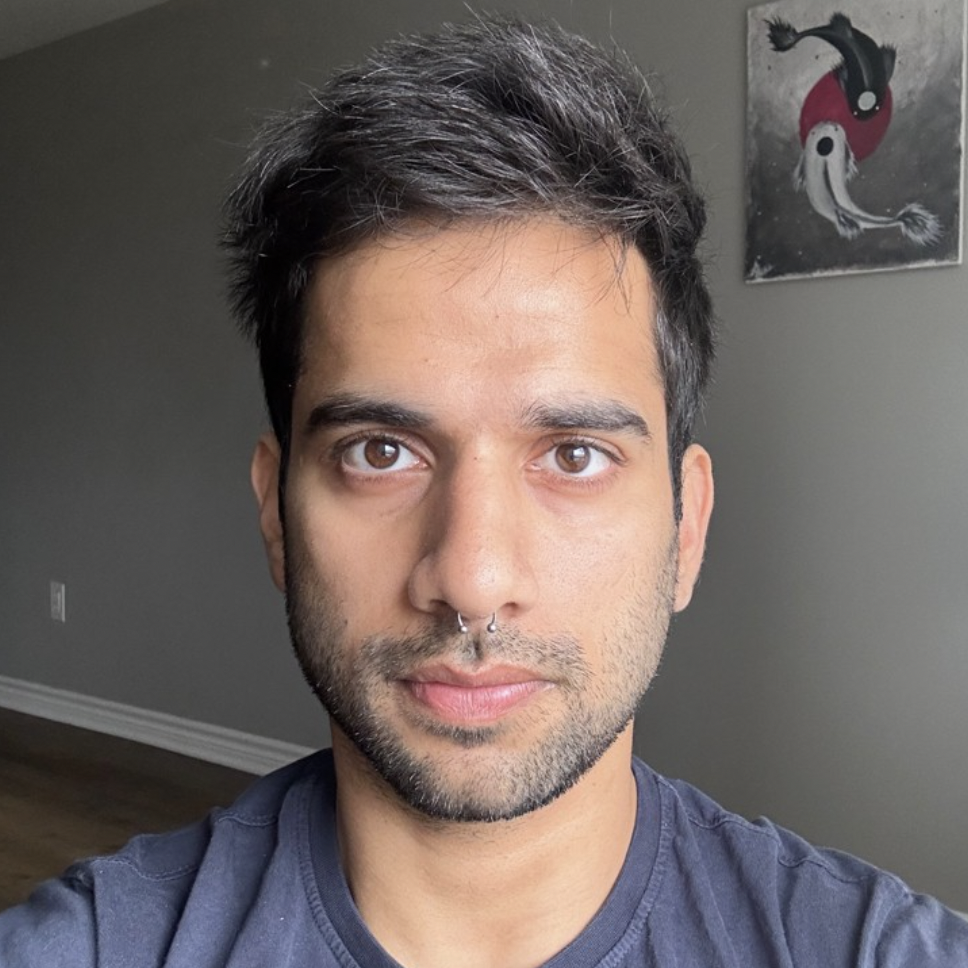

Contact
- Email: reach.aroraaman@gmail.com
- Phone: +13435973979
- Instagram:

- Instagram:
- Facebook:

I've been fascinated by sports and martial arts from a young age. I pursued Karate at the age of 6 and Judo a few years later. As a teenager, I explored track and field, basketball, football, and cricket. Over time, my interest shifted towards Brazilian Jiujitsu and other modalities like Calisthenics, Tricking, Trampolining, and Parkour.
I've trained under the Ido Portal method for half a decade and have gained knowledge in human psychology, physiology, and biomechanics. My journey has led me to become a mentor myself, taking inspiration from everything and everyone around me while practicing and teaching Yoga.
Stay tuned for more and keep moving!
